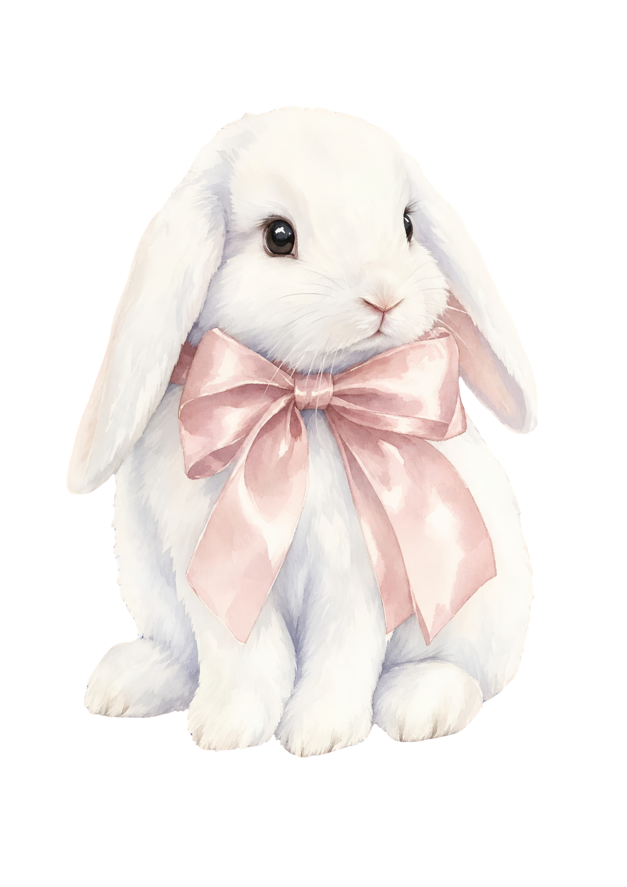
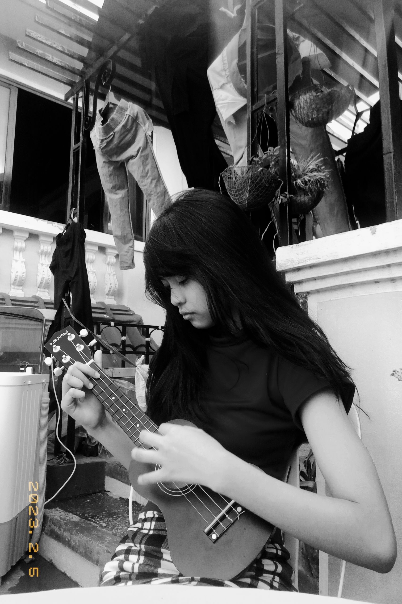
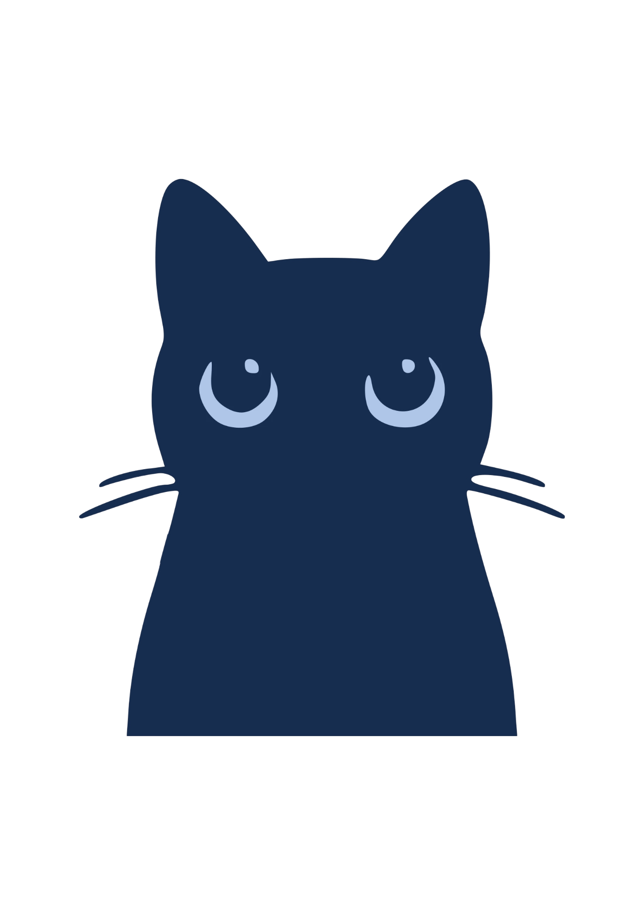
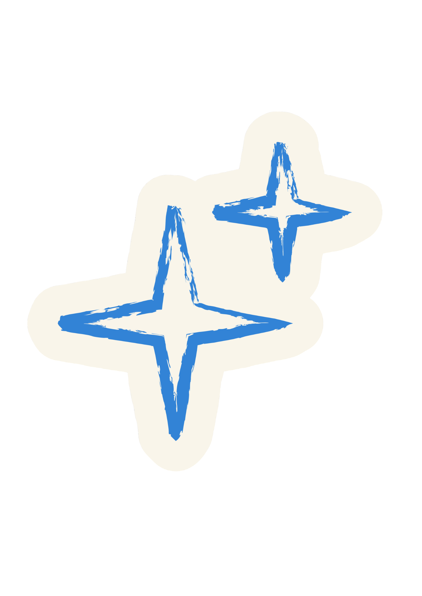

A LITTLE SPACE OF MINE
A personal website featuring my interests, favorite K-dramas, K-pop groups, music, and other little things that make me happy.
Explore


ABOUT ME
Hi! I'm Terenielle, but you can call me Yel. I'm someone who enjoys finding happiness in little things, whether it's listening to music, watching a good drama, or simply spending time doing things I love.
This little website is where I keep some of my favorite things, from K-dramas and K-pop groups to songs I never get tired of listening to.